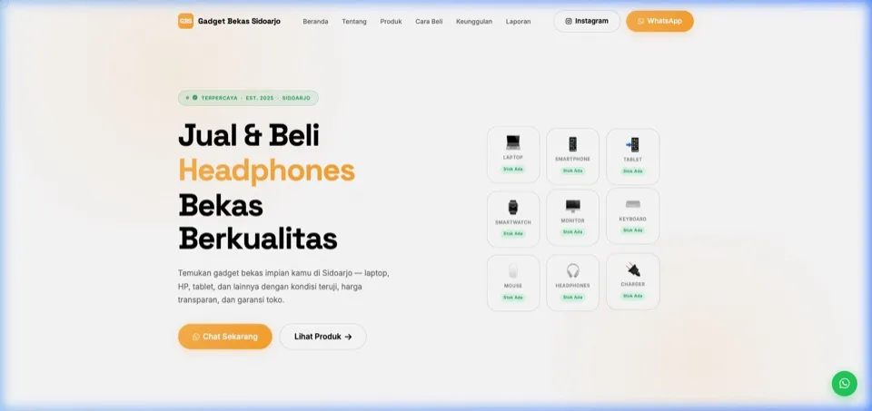
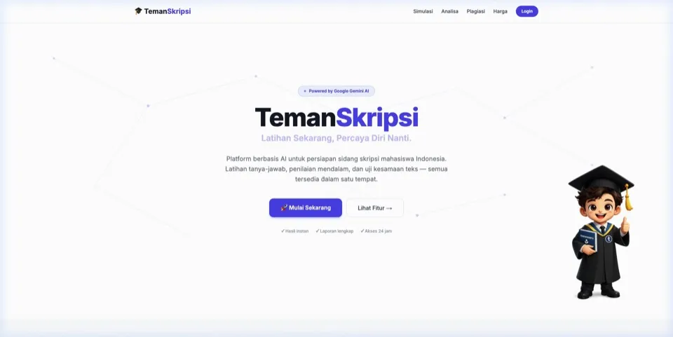
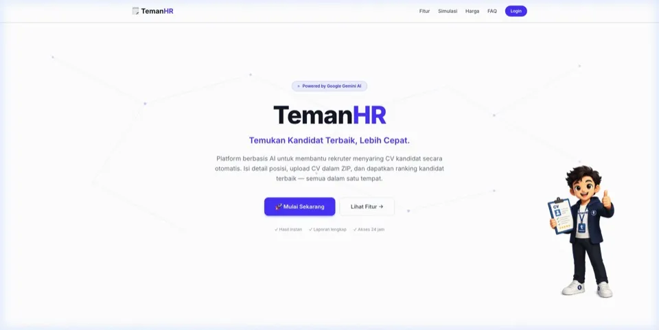
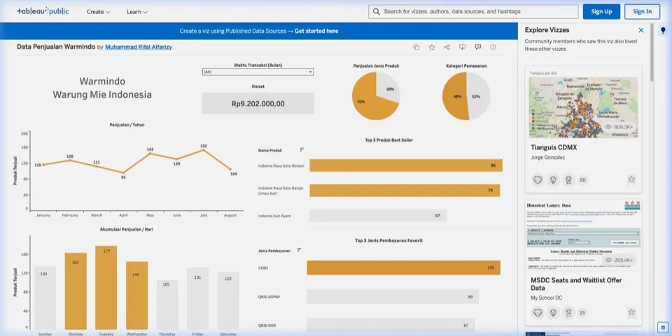
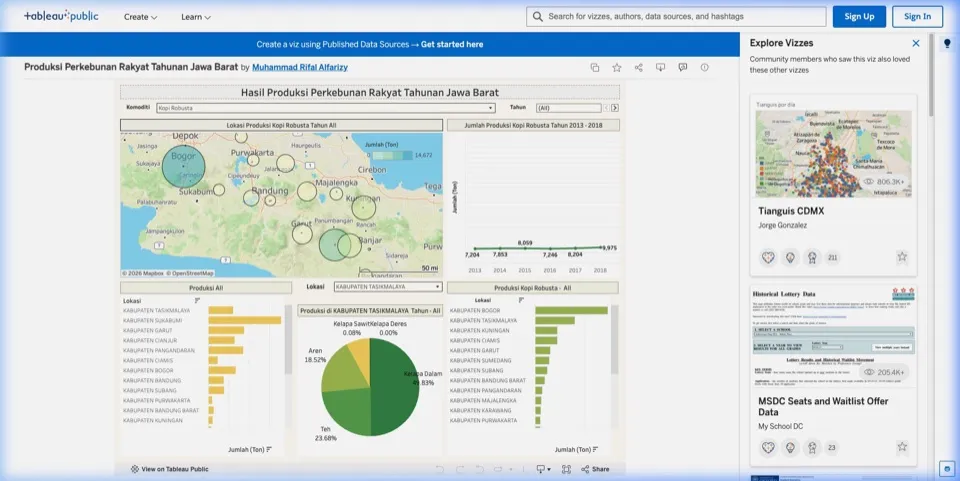
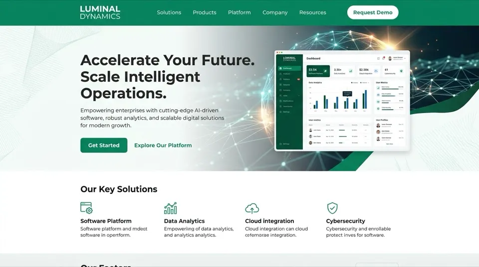
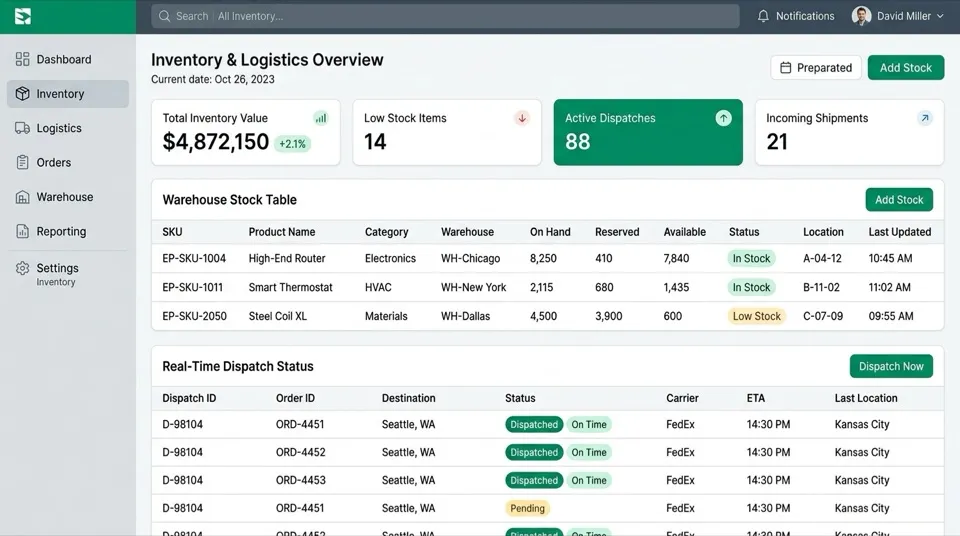
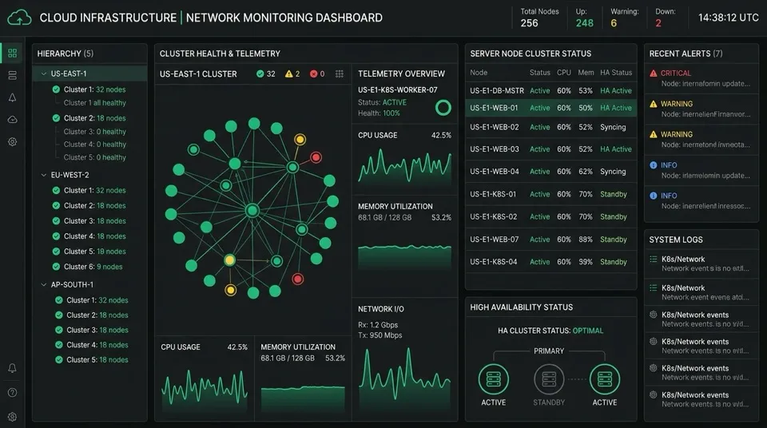
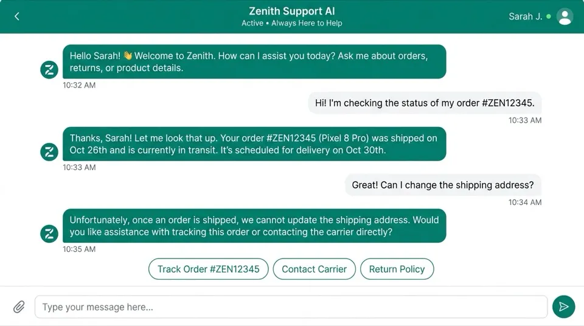

Portofolio Proyek
Sembilan proyek aplikasi web, sistem informasi manajemen, portal bisnis, dan solusi AI yang kami kembangkan untuk klien di Sidoarjo, Surabaya, dan sekitarnya. Gunakan filter kategori untuk menyaring proyek sesuai kebutuhan Anda.

Gadget Bekas Sidoarjo (GBS)
Platform web katalog dan penjualan gadget bekas terpercaya di Sidoarjo dengan navigasi responsif, verifikasi stok, dan integrasi WhatsApp.

TemanSkripsi — Simulator Sidang AI
Platform cerdas berbasis Google Gemini AI untuk simulasi dan persiapan sidang skripsi mahasiswa, mencakup latihan tanya-jawab dinamis, evaluasi mendalam, dan telaah dokumen.

TemanHR — Screening CV Kandidat AI
Sistem automasi talent acquisition bertenaga AI untuk menyaring dan menganalisis berkas CV kandidat secara instan, perankingan kecocokan profil, dan rekomendasi rekrutmen.

Data Penjualan Warmindo
Dasbor analitik interaktif Tableau Public untuk pemantauan omzet penjualan, analisis produk terlaris, tren akumulasi harian, dan preferensi metode pembayaran Warmindo.

Produksi Perkebunan Rakyat Jabar
Visualisasi geospasial Tableau Public sebaran komoditas perkebunan rakyat tahunan Jawa Barat, memetakan produktivitas wilayah per komoditas dan tren distribusi hasil panen.

Portal Korporasi & Katalog Global
Website korporasi modern dengan performa tinggi, navigasi intuitif, arsitektur SEO terstruktur, dan Core Web Vitals optimal.

SupplyChain OS & Logistik Cerdas
Platform manajemen gudang terpadu dengan pemindaian barcode real-time, kontrol inventaris multi-cabang, dan otomatisasi alur stok.

Infrastruktur Kluster Kubernetes High-Availability
Arsitektur cloud tangguh multi-node dengan failover otomatis, pemantauan metrik server kontinu, dan snapshot backup terenkripsi.

Asisten AI Pelanggan & WhatsApp Bisnis
Agen cerdas kecerdasan artifisial terintegrasi WhatsApp untuk melayani katalog produk, pengecekan pesanan, dan reservasi otomatis 24/7.